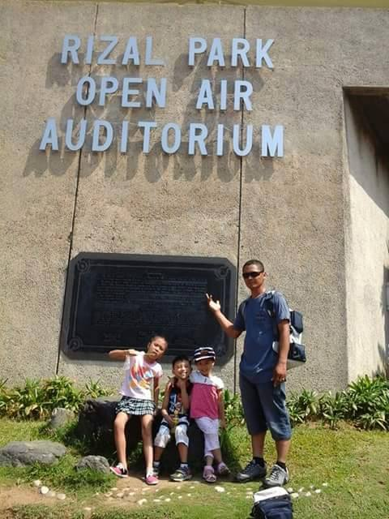
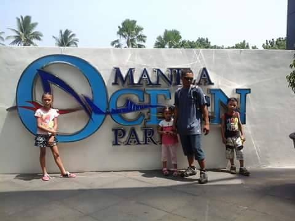

Exploring Manila
Our Manila adventure began with a stroke of luck. On our flight to the capital, we had the unexpected pleasure of meeting a famous actor. This chance encounter set the tone for the exciting experiences that followed.
Our first stop in the city was Ocean Park, where we marveled at the marine life from around the world in an awe-inspiring underwater tunnel. The variety of creatures was amazing, and the experience left us with unforgettable memories.
Next, we visited Rizal Park, a peaceful and historically significant location in the heart of Manila. As we walked through the park, we learned about Dr. Jose Rizal, the national hero who played a pivotal role in the country’s independence. It was a calming and educational experience, connecting us with the Philippines’ rich history.
Here are the highlights of our Manila adventure:
- Met a famous actor on our flight to Manila
- Explored the wonders of Ocean Park, including the stunning underwater tunnel
- Visited Rizal Park, learning about the life and legacy of Dr. Jose Rizal
Our Favorite Activities in Manila
Although Manila has many attractions, two stood out during our trip:
- Visiting Ocean Park and discovering the underwater wonders
- Walking through Rizal Park, reflecting on the life of the national hero
Snapshots of Manila
 Our time in Manila gave us a glimpse into both the history and modern vibrance of the Philippines. Ocean Park and Rizal Park were highlights, offering us a deeper connection with the country’s natural beauty and historical significance.